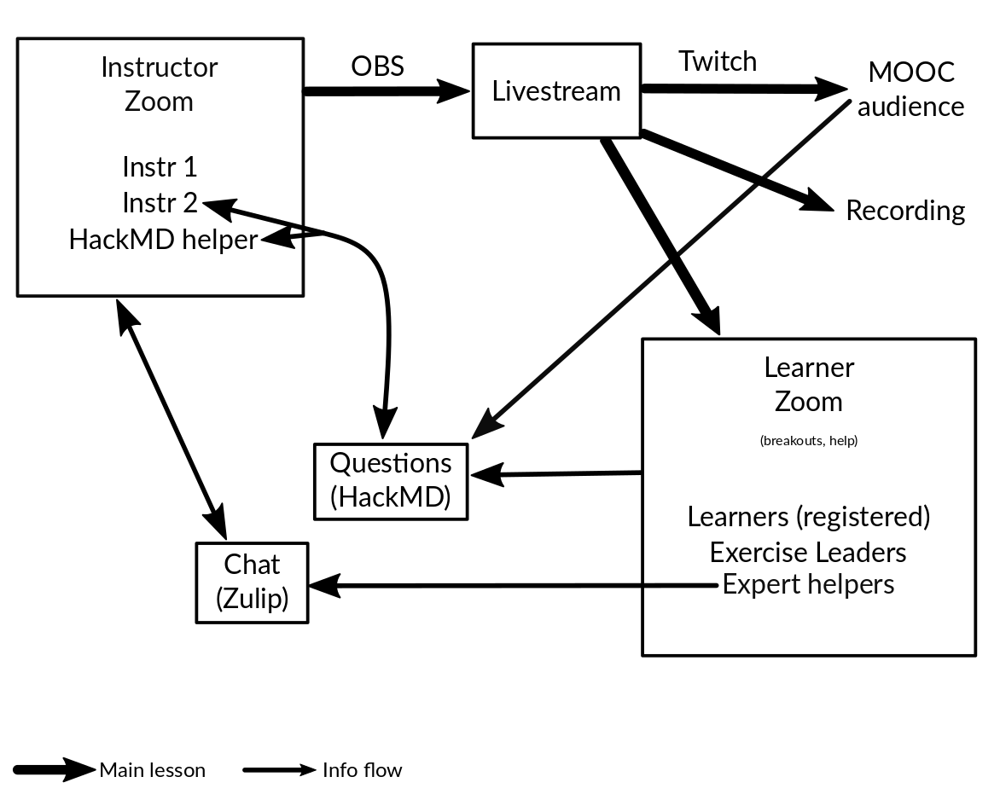

Local breakout rooms
Some CodeRefinery courses are designed to be large scale, with distributed registration. In short, this means there is a livestream that anyone in the world can watch. Since we can’t handle a personal support for everyone in the world, you can open registration to attend the course and provide support.
Principles
We have a livestream, open to everyone in the world. The CodeRefinery MOOC strategy strategy allows us to reach a huge audience in a decentralized manner.
Decentralized teaching allows us to reach many more people than we could otherwise.
Most attendees can ask from help through the Notes doc (Collaborative document mechanics and controls), which works very well
There are periodic exercise sessions, where learners and teams can work together.
Step 1: Local breakout room
Create your own breakout room - whether online or a physical space. That means for example ask some friends to join you to watch the stream and collaborate with the exercises.
Our exercise sessions are very clearly announced and communicated. During these times, the livestream goes silent, and you can work within your breakout rooms. The end of the exercise sessions and breaks are clearly communicated as well - we support your breakout room scheduling as much as possible.
Attendees can ask general questions via the Notes
You can continue your local support even after the course.
You may want to run local “installation help” sessions.
Step 2: Registration
If you have a broad audience, you may want to make your own registration form, completely separated from ours. That may help with reservations and catering if any.
Please let us know the total registrations and attendance, or have everyone to register in our form in addition to yours. This help us in reporting our impact and secure support.
You may (but don’t have to) create teams, where you have one team leader for 5-6 learners. The team leader guides the team and supports collaboration and community - and lets us scale much better than we could otherwise. Teams also support retention after the course, especially if they knew each other before registering. (See Team leaders (Helpers, Exercise leaders))
We would like to know statistics from how many people attended from your location for our impact reports. (still, the top priority is reaching as many people as possible, we’ll adjust reporting to what works)
Step 3: Teaching
You support learners during the course
If you don’t know everything, that is OK! You can also relay questions to our Notes doc where experts can answer
Step 4: Follow-up
A course is good, but learning doesn’t stop then. Our materials remain available indefinitely.
Since you know your local audience, you can continue to support them for long-term impact (if you want). This is probably why you value the teaching anyway, right?
Summary
As you can see, there are many models, from distributed and simple to centralized. It’s best to talk in chat and see what will work best for each workshop, but we are generally biased towards more decentralized approaches for large courses.